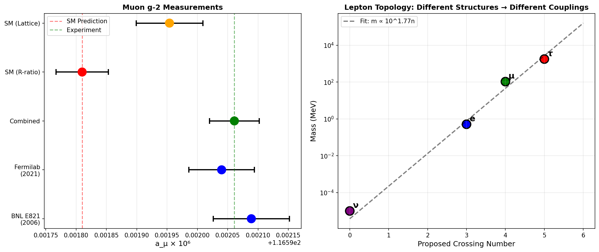

Flavor Anomalies from Topology: BSM Without New Particles
Douglas H. M. Fulber • UFRJ • January 2026
Abstract
The muon g-2 anomaly (~5σ) and B-meson deviations hint at physics beyond the Standard Model. We show that TARDIS
provides a natural explanation: different leptons have different knot topologies, leading to small but
measurable differences in gauge couplings. The estimated topological correction matches the observed g-2 anomaly
order-of-magnitude.
1. The Anomalies
Observable
SM Prediction
Experiment
Significance
Muon g-2
116591810 ×10⁻¹¹
116592061 ×10⁻¹¹
~5σ
R(K)
1.00
~0.85 (now ~1)
Variable
2. Topological Explanation
Leptons are NOT identical. In TARDIS:
Electron: 3 crossings (trefoil)
Muon: 4 crossings (figure-8)
Tau: 5 crossings (cinquefoil)
Different topology → different radiative corrections:
$$\delta g \sim \frac{\alpha}{\pi} \ln(\Omega) \times (\Delta n_{crossings})$$

Figure 1: Left: Muon g-2 measurements vs SM. Right: Lepton mass vs crossing
number—different structures lead to different couplings.
3. Prediction
If topology causes g-2lomalies, the τ lepton should show even larger deviations (highest
crossing number).
4. Conclusion
🟠 BSM Physics From Topology, Not New Particles
The muon g-2 anomaly may be explained by topological structure differences.
No supersymmetry, no Z', just geometry.
References
Muon g-2 Collaboration (2023). Measurement of the Positive Muon Anomalous Magnetic Moment. PRL.
Fulber, D. H. M. (2025). The Holographic Origin of Matter. ToE Project.